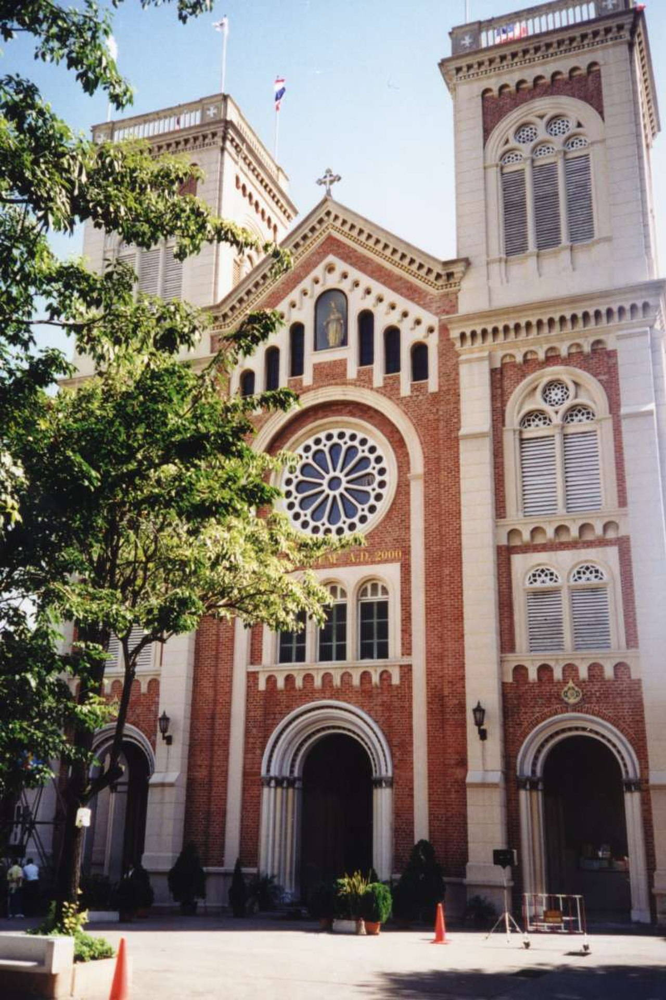
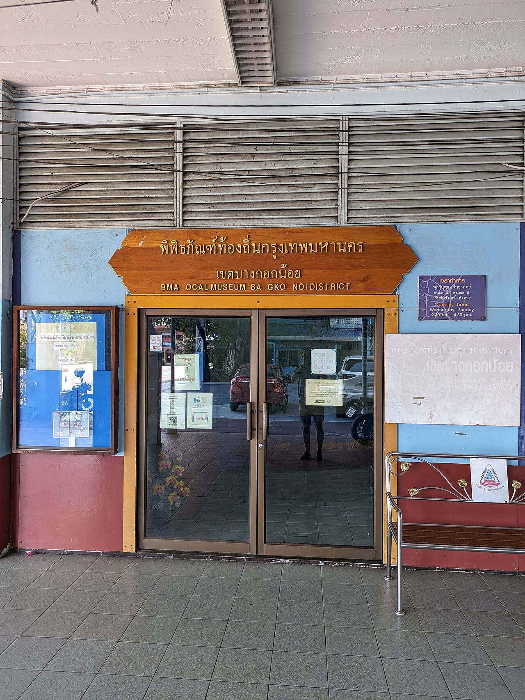
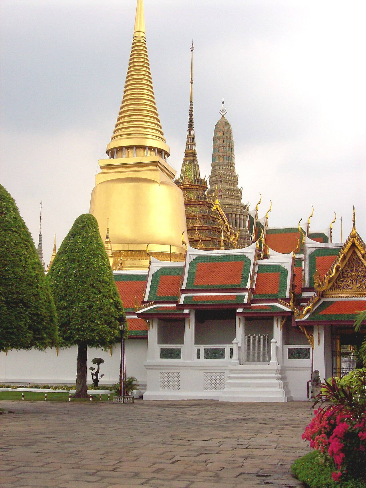
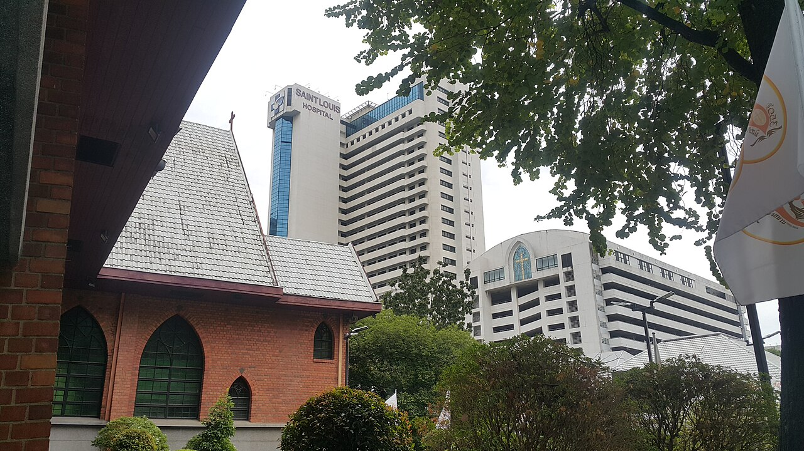

OTIUM — практика нарочитого досуга. В античном смысле otium — не побег от работы, а время, когда внимание возвращается к памяти, пейзажу и мысли — без прикладного дедлайна.
Мы выстраиваем маршруты для неспешного присутствия, а не для чек-листа достопримечательностей: важно быть в месте, а не «потреблять» виды.
OTIUM — не туроператор. Это приглашение пройтись, остановиться и оставить маршрут незавершённым, если свет на фасаде заслуживает ещё минуты.
Исторические и справочные гербы
Bangkok
Путеводитель. Объектов в этом выпуске: 36.
Историческая справка
Бангкок (Крунг-Тхеп) — столица Таиланда и главный политический, экономический и культурный центр страны.
Основан как резиденция династии Чакри в XVIII веке, город вырос из сети каналов и храмовых комплексов в мегаполис региона. Буддийские святыни, королевская застройка и плотная застройка соседствуют с современной инфраструктурой.
В XIX–XX веках Сиам сохранил независимость и модернизировал столицу; после 1945 года Бангкок стал центром региональной экономики и туризма. Метро, аэропорты-хабы и деловые кварталы соседствуют с рынками и храмами, задавая ритм мегаполиса Юго-Восточной Азии.
Ananta Samakhom Throne Hall
Ananta Samakhom Throne Hall — landmark in Bangkok.
Факты и детали
Check opening hours and ticketing on official sites before travel.
Crowds peak on weekends and public holidays.
Asiatique riverfront
Asiatique riverfront — landmark in Bangkok.
Факты и детали
Check opening hours and ticketing on official sites before travel.
Crowds peak on weekends and public holidays.
Assumption cathedral Bangkok.jpg
Assumption cathedral Bangkok.jpg

Assumption cathedral Bangkok.jpg — landmark in Bangkok.
Bang Krachao
Bang Krachao — landmark in Bangkok.
Факты и детали
Check opening hours and ticketing on official sites before travel.
Crowds peak on weekends and public holidays.
Bangkok Noi Museum.jpg
Bangkok Noi Museum.jpg

Bangkok Noi Museum.jpg — landmark in Bangkok.
Chao Phraya express boats
Адрес: Central pier network
Orange-flag express boats skip-stop between old city wats and modern hotels—cheap deck seating with river breeze.
Факты и детали
Tourist boats cost more but add narration and fewer transfers.
Evening ICONSIAM ferries link shopping malls with light shows.
История
Canal city logistics moved toward motorised ferries as roads choked; river remains a commuter spine.
Значение
The scenic spine tying Wat Arun, Tha Tien, and Sathorn piers.
Chatuchak Park
Chatuchak Park — landmark in Bangkok.
Факты и детали
Check opening hours and ticketing on official sites before travel.
Massive weekend bazaar for plants, crafts, street food, and vintage clothing—section maps help avoid getting lost.
Факты и детали
Morning hours beat heat and crowds; carry cash for small vendors.
MRT Kamphaeng Phet exits directly into market sectors.
История
Grew from municipal flea markets into a national wholesale-retail hybrid with international tourist traffic.
Значение
Bangkok's most intense single-site shopping experience.
Erawan Shrine
Адрес: Ratchaprasong intersection | Стиль: Hindu spirit house with Khmer-style pavilion | Период: 1956
Busy corner shrine to Brahma where dancers offer thanks for answered prayers amid mall traffic.
Факты и детали
Incense and marigold vendors ring the fence.
Evening light mixes with LED billboards overhead.
История
Built to counter bad omens during the original Erawan Hotel construction.
Значение
Working shrine inside Bangkok's luxury retail crossroads.
Giant Swing
Sao Chingcha — landmark in Phra Nakhon district, Bangkok, Thailand.
Факты и детали
Check opening hours and ticketing on official sites before travel.
Crowds peak on weekends and public holidays.
Grand Palace Bangkok 1.jpg
Grand Palace Bangkok 1.jpg

Grand Palace Bangkok 1.jpg — landmark in Bangkok.
Grand Palace complex
Адрес: Phra Nakhon | Стиль: Thai royal temples and throne halls | Период: 1782 onward (Rattanakosin foundation)
Walled precinct of throne halls, royal offices, and Wat Phra Kaew with the Emerald Buddha. Strict dress code at gates.
Факты и детали
Shoulders and knees must be covered; rental sarongs available outside.
Combine tickets sometimes bundle nearby museums—check current policy.
История
Rama I moved the capital across the river; successive kings expanded pavilions and mural galleries.
Значение
Thailand's foremost royal and religious ensemble in the old island city.
ICONSIAM
ICONSIAM — landmark in Bangkok.
Факты и детали
Check opening hours and ticketing on official sites before travel.
Crowds peak on weekends and public holidays.
Jim Thompson Art Center
Jim Thompson Art Center — landmark in Bangkok.
Факты и детали
Check opening hours and ticketing on official sites before travel.
Crowds peak on weekends and public holidays.
Jim Thompson House
Адрес: Rama I Road | Стиль: Traditional Thai timber houses reassembled | Период: 1950s teak compound
Silk merchant's preserved home displaying Southeast Asian art and Thai craft rooms.
Факты и детали
Guided tours explain Thompson's OSS background and disappearance myth.
Café and boutique extend the visit beyond the house circuit.
История
Thompson collected panels from upcountry houses before his 1967 Malaysia trip.
Значение
Accessible introduction to Thai domestic architecture downtown.
King Power Mahanakhon
King Power Mahanakhon — landmark in Bangkok.
Факты и детали
Check opening hours and ticketing on official sites before travel.
Crowds peak on weekends and public holidays.
Lumphini Park
Адрес: Pathum Wan | Стиль: Tropical urban park and lake | Период: 1920s royal park
Central green with monitor lizards, paddle boats, and dawn jogging loops around the lake.
Факты и детали
MRT Silom station opens directly onto the park edge.
Smoking bans are enforced on most internal paths.
История
Named after Lumbini in Nepal; land was royal before public opening.
Значение
Primary breathing space between Silom and Sukhumvit office belts.
MBK Center
MBK Center — landmark in Bangkok.
Факты и детали
Check opening hours and ticketing on official sites before travel.
Crowds peak on weekends and public holidays.
National Museum Bangkok
National Museum Bangkok — landmark in Bangkok.
Факты и детали
Check opening hours and ticketing on official sites before travel.
Crowds peak on weekends and public holidays.
Royal Barges Museum
Royal Barges Museum — landmark in Bangkok.
Факты и детали
Check opening hours and ticketing on official sites before travel.
Crowds peak on weekends and public holidays.
Scala Cinema (I).jpg
Scala Cinema (I).jpg
Scala Cinema (I).jpg — landmark in Bangkok.
Siam Paragon
Siam Paragon — shopping mall.
Факты и детали
Check opening hours and ticketing on official sites before travel.
Crowds peak on weekends and public holidays.
St Louis Church Bangkok 2018 02.jpg
St Louis Church Bangkok 2018 02.jpg

St Louis Church Bangkok 2018 02.jpg — landmark in Bangkok.
Ton Son Mosque (I).jpg
Ton Son Mosque (I).jpg
Ton Son Mosque (I).jpg — landmark in Bangkok.
Wat Arun (Temple of Dawn)
Адрес: Thonburi, Chao Phraya west bank | Стиль: Khmer-influenced prang encrusted with porcelain | Период: 17th c. origins; prang restored 2013–2017
Steep central prang decorated with floral china shards, best photographed at sunset from opposite river piers.
Факты и детали
Ferry hop from Tha Tien is part of the classic riverside itinerary.
Narrow stairs on the prang require careful ascent.
История
Named for the dawn glow on its tiles; Rama II-era expansion created the tall Khmer-style tower visitors climb.
Значение
Thonburi shore's vertical exclamation opposite the Grand Palace.
Wat Arun view
Wat Arun view — landmark in Bangkok.
Факты и детали
Check opening hours and ticketing on official sites before travel.
Crowds peak on weekends and public holidays.
Wat Benchamabophit (Marble Temple)
Адрес: Si Ayutthaya Road | Стиль: Thai temple using Carrara marble cladding | Период: 1899 (Prince Naris era)
Wat Benchamabophit (Marble Temple) — landmark in Bangkok.
Факты и детали
Five-baht coin reverse depicts this ubosot.
Monastic chanting carries into the cloister galleries.
История
Rama V commissioned a modern royal wat using imported stone and skilled Italian carvers.
Значение
Classic postcard temple away from riverside crowds.
Wat Kalayanamit
Wat Kalayanamit — landmark in Bangkok.
Факты и детали
Check opening hours and ticketing on official sites before travel.
Crowds peak on weekends and public holidays.
Wat Mahathat
Wat Mahathat Yuwaratrangsarit (Thai: วัดมหาธาตุยุวราชรังสฤษฎิ์) is a Buddhist temple in Bangkok, Thailand. It is one of only six first-class royal temples of the ratchaworamahawihan grade in Thailand. Its monks belong to the Mahā Nikāya.
Факты и детали
Check opening hours and ticketing on official sites before travel.
Crowds peak on weekends and public holidays.
Wat Pho (Temple of the Reclining Buddha)
Адрес: Sanam Chai Road | Стиль: Rattanakosin temple with long viharn | Период: 16th c. monastery; reclining hall expanded 1832
Giant reclining Buddha in gold leaf with mother-of-pearl feet; campus famous for Thai massage school and chedi rows.
Факты и детали
Coin bowls line the gallery behind the Buddha's back for merit offerings.
Traditional massage pavilion may require same-day queue tickets.
История
Rama I enlarged an older wat; Rama III added encyclopaedic stupas of Buddhist cosmology.
Значение
UNESCO Memory of the World inscription for stone inscriptions on site.
Wat Phra Kaew
Wat Phra Kaew — Royal temple complex in Bangkok, Thailand.
Факты и детали
Check opening hours and ticketing on official sites before travel.
Crowds peak on weekends and public holidays.
Wat Ratchanatdaram
Wat Ratchanatdaram — landmark in Bangkok.
Факты и детали
Check opening hours and ticketing on official sites before travel.
Crowds peak on weekends and public holidays.
Wat Saket (Golden Mount)
Адрес: Boriphat Road | Стиль: Ayutthaya-style chedi on artificial hill | Период: Ayutthaya origins; chedi expanded 19th c.
Golden chedi atop a man-made hill with spiral ramp; views over Rattanakosin old city.
Факты и детали
The wat hosts a major Loy Krathong fair each autumn.
Modest dress is expected at the upper terrace.
История
Monks carried soil in sacks to raise the drum-shaped reliquary above flood-prone ground.
Значение
Landmark hill visible from many downtown streets.
Wat Suthat
Wat Suthat — landmark in Bangkok.
Факты и детали
Check opening hours and ticketing on official sites before travel.
Crowds peak on weekends and public holidays.
Wat Traimit (Golden Buddha)
Адрес: Yaowarat | Стиль: Chinese-Thai temple podium and hall | Период: 2010 temple hall; image much older
Five-and-a-half tonne solid gold Buddha revealed when a stucco casing cracked during moving.
Факты и детали
Yaowarat food stalls cluster within a short walk after viewing.
Museum levels explain Chinatown migration history.
История
The figure was disguised for centuries before rediscovery in the 1950s.
Значение
Chinatown's spiritual and tourist anchor.
Yaowarat Road (Chinatown)
Адрес: Samphanthawong | Стиль: Sino-Thai neon and signage canyon | Период: Early 20th c. shophouse street
Night market street for bird's nest soup, seafood queues, and gold shops under bilingual signs.
Факты и детали
Arrive hungry; many stalls open only after dark.
MRT Wat Mangkon improves access from other districts.
История
Teochew traders expanded a canal-side lane into a neon gastronomy spine.